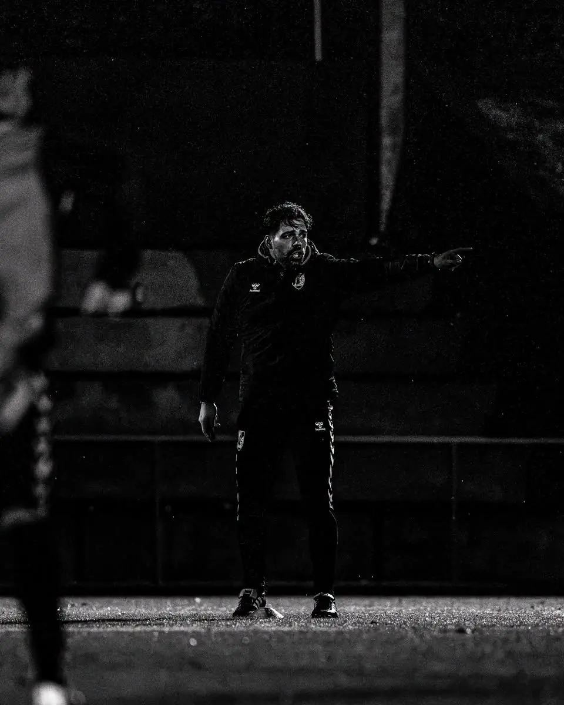

Vitória SC Sub-17 visita o CD Feirense no domingo, 22 de novembro
Os sub-17 do Vitória SC defrontam o CD Feirense, fora de portas, no domingo, 22 de novembro, às 11 horas. O encontro realiza-se no Campo 6 do Complexo Rodrigo Nunes, em Santa Maria da Feira, e é referente à 12.ª jornada do Campeonato Nacional de Sub-17.
Ler notícia →